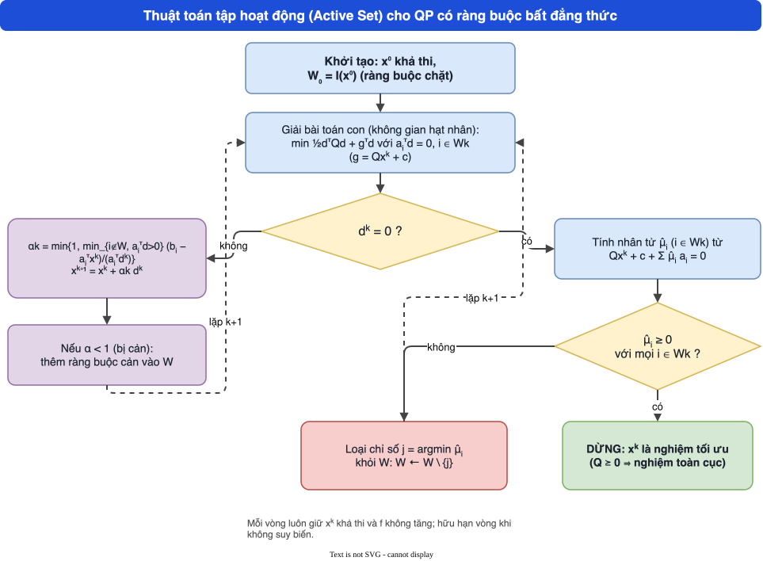
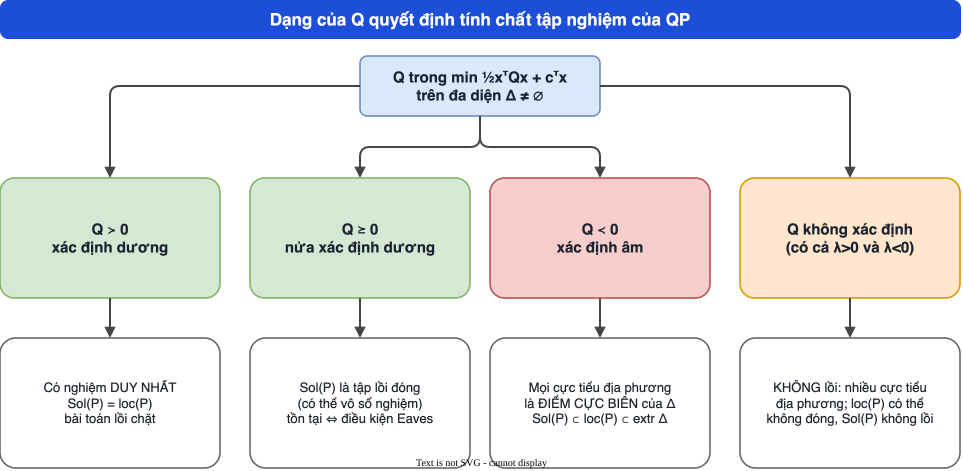

MODULE 3
Quy hoạch toàn phương
Quy hoạch toàn phương (QP): hàm mục tiêu toàn phương, ràng buộc tuyến tính. Module này nghiên cứu điều kiện tồn tại nghiệm, cấu trúc tập nghiệm, rồi hai thuật toán: phương pháp không gian hạt nhân (ràng buộc đẳng thức) và phương pháp tập hoạt động (ràng buộc bất đẳng thức).
- Đối xứng hóa ma trận Q, phân loại QP (lồi, lõm, không xác định) và nhận ra LP là trường hợp riêng.
- Phát biểu điều kiện tồn tại nghiệm (Frank–Wolfe, Eaves và các hệ quả) và các tính chất của tập nghiệm (đóng, không bị chặn, hữu hạn).
- Giải QP ràng buộc đẳng thức bằng phương pháp không gian hạt nhân (Z, Y, \(d_Y\), \(d_Z\), \(\mu\)).
- Thực hiện thuật toán tập hoạt động: giải bài toán con, tính bước \(\alpha_k\), thêm ràng buộc cản, loại ràng buộc có nhân tử âm.
- Đối chiếu kết quả với phần mềm và nhận ra chỗ chưa khớp trong slide (ví dụ null-space, Bài tập 1).
Công thức cốt lõi
| Bước | Dấu hiệu | Hành động |
|---|---|---|
| \(d^k\ne0\) | còn hướng giảm với \(W_k\) hiện tại | đi \(x^{k+1}=x^k+\alpha_kd^k\); thêm ràng buộc cản |
| \(d^k=0\), mọi \(\hat\mu\ge0\) | KKT thỏa | DỪNG: nghiệm toàn cục (Q ⪰ 0) |
| \(d^k=0\), có \(\hat\mu\lt 0\) | ràng buộc đang cản đường | loại chỉ số có \(\hat\mu\) âm nhất |
Sơ đồ tổng hợp


| Dạng đề | Nhận biết | Công cụ | Mẫu |
|---|---|---|---|
| A. QP chỉ có đẳng thức | “\(\min\tfrac12x^\top Qx+c^\top x\) s.t. \(Ax=b\)” | hệ KKT \([Q\ A^\top;A\ 0]\) | Bảng 1 |
| B. Cũng QP đẳng thức nhưng dùng null space | “phương pháp không gian null” | \(x=x_p+Zy\), \(Z^\top QZ\,y=\dots\) | Bảng 2 |
| C. QP có BĐT — tập hoạt động | “chạy thuật toán active set từ \(x_0\)” | bảng vết lặp | Bảng 3 |
| D. QP có nghiệm không? | “chứng minh tồn tại”, “bị chặn dưới?” | Q nửa xác định dương, hướng lùi xa | Bảng 4 |
A. QP đẳng thức — giải bằng hệ KKT
Nhận biết đề: \(\min\tfrac12x^\top Qx+c^\top x\) s.t. \(Ax=b\).
- Viết hệ: \(Qx+A^\top\mu=-c\) và \(Ax=b\), tức \(\begin{pmatrix}Q&A^\top\\A&0\end{pmatrix}\begin{pmatrix}x\\\mu\end{pmatrix}=\begin{pmatrix}-c\\b\end{pmatrix}\).
- Giải hệ tuyến tính \((n+m)\times(n+m)\); ma trận KKT khả nghịch khi A đủ hạng hàng và \(Z^\top QZ\succ0\).
- Tính \(f(x^*)\); nếu \(Z^\top QZ\succ0\) thì nghiệm là cực tiểu toàn cục duy nhất.
| Thành phần | Điền |
|---|---|
| Q, c, A, b | … |
| Hệ KKT từng dòng | … |
| Nghiệm \(x^*\), \(\mu\) | … |
| \(f(x^*)\) | … |
Ví dụ điền sẵn: \(\min x_1^2+x_2^2+x_3^2-2x_1-5x_2\) s.t. \(x_1+x_2+x_3=3\)
| Thành phần | Điền |
|---|---|
| Q, c, A, b | \(Q=2I,\ c=(-2,-5,0),\ A=(1\ 1\ 1),\ b=3\) |
| Hệ | \(2x_1-2+\mu=0,\ 2x_2-5+\mu=0,\ 2x_3+\mu=0,\ x_1+x_2+x_3=3\) |
| Nghiệm | \(x_1=(2-\mu)/2,\ x_2=(5-\mu)/2,\ x_3=-\mu/2\); cộng: \(7/2-3\mu/2=3\Rightarrow\mu=1/3\). \(x^*=(5/6,\,7/3,\,-1/6)\) |
| \(f\) | \(-43/6\approx-7.17\) |
B. Phương pháp không gian null (null space)
Nhận biết đề: cùng bài đẳng thức nhưng đề yêu cầu “khử ràng buộc”.
- Tìm một nghiệm riêng \(x_p\) của \(Ax=b\) và ma trận \(Z\) (\(n\times(n-m)\)) có các cột là cơ sở của \(\ker A\).
- Thế \(x=x_p+Zy\): bài toán không ràng buộc theo y với Hessian \(Z^\top QZ\) (hessian rút gọn).
- Giải \(Z^\top QZ\,y=-Z^\top(Qx_p+c)\), rồi \(x^*=x_p+Zy\).
| Thành phần | Điền |
|---|---|
| \(x_p\) | … |
| \(Z\) | … |
| \(Z^\top QZ\) | … |
| \(-Z^\top(Qx_p+c)\) | … |
| \(y\), \(x^*\) | … |
Ví dụ điền sẵn: cùng bài ở dạng A
| Thành phần | Điền |
|---|---|
| \(x_p\) | \((3,0,0)\) |
| \(Z\) | \(\begin{pmatrix}-1&-1\\1&0\\0&1\end{pmatrix}\) |
| \(Z^\top QZ\) | \(\begin{pmatrix}4&2\\2&4\end{pmatrix}\succ0\) (\(\det=12\)) |
| vế phải | \(Qx_p+c=(4,-5,0)\Rightarrow-Z^\top(\dots)=(9,4)\) |
| y, x | \(y=(7/3,-1/6)\); \(x^*=(5/6,7/3,-1/6)\) — trùng với dạng A |
Kiểm tra chéo giữa hai phương pháp là cách tự phát hiện sai số học.
C. QP có bất đẳng thức — bảng vết tập hoạt động
Nhận biết đề: “Áp dụng thuật toán tập hoạt động từ \(x_0\), tập làm việc \(W_0\)”.
- Chuẩn hoá ràng buộc về \(a_i^\top x\le b_i\). Mỗi vòng lặp k: giải bài đẳng thức trên \(W_k\): \(\begin{pmatrix}Q&A_W^\top\\A_W&0\end{pmatrix}\begin{pmatrix}d\\\mu\end{pmatrix}=\begin{pmatrix}-g\\0\end{pmatrix}\), \(g=Qx_k+c\).
- Nếu \(d=0\): xét \(\mu\). Mọi \(\mu\ge0\) ⇒ dừng, tối ưu; ngược lại bỏ ràng buộc có \(\mu\) âm nhất khỏi W.
- Nếu \(d\ne0\): \(\alpha=\min\{1,\ \min_{i\notin W,\,a_i^\top d\gt 0}(b_i-a_i^\top x)/(a_i^\top d)\}\); \(x_{k+1}=x_k+\alpha d\); nếu \(\alpha\lt 1\) thì thêm ràng buộc cản vào W.
| k | \(x_k\) | \(W_k\) | \(d_k\) | \(\mu\) | Hành động |
|---|---|---|---|---|---|
| 0 | … | … | … | … | … |
| 1 | … | … | … | … | … |
| 2 | … | … | … | … | … |
Ví dụ điền sẵn: \(\min(x_1-1)^2+(x_2-2.5)^2\) với 5 ràng buộc, \(x_0=(2,0)\), \(W_0=\{3,5\}\)
Ràng buộc (dạng \(\le\)): (1) \(-x_1+2x_2\le2\); (2) \(x_1+2x_2\le6\); (3) \(x_1-2x_2\le2\); (4) \(-x_1\le0\); (5) \(-x_2\le0\). \(Q=2I\), \(c=(-2,-5)\).
| k | \(x_k\) | \(W_k\) | \(d_k\) | \(\mu\) | Hành động |
|---|---|---|---|---|---|
| 0 | \((2,0)\) | \(\{3,5\}\) | \((0,0)\) | \((-2,-1)\) | bỏ ràng buộc 3 (μ âm nhất) |
| 1 | \((2,0)\) | \(\{5\}\) | \((-1,0)\) | — | \(\alpha=1\), không bị cản ⇒ \(x=(1,0)\) |
| 2 | \((1,0)\) | \(\{5\}\) | \((0,0)\) | \(-5\) | bỏ ràng buộc 5 |
| 3 | \((1,0)\) | \(\emptyset\) | \((0,2.5)\) | — | \(\alpha=0.6\), bị cản bởi (1) ⇒ \(x=(1,1.5)\), \(W=\{1\}\) |
| 4 | \((1,1.5)\) | \(\{1\}\) | \((0.4,0.2)\) | — | \(\alpha=1\) ⇒ \(x=(1.4,1.7)\) |
| 5 | \((1.4,1.7)\) | \(\{1\}\) | \((0,0)\) | \(0.8\ge0\) | dừng: \(x^*=(1.4,1.7)\), \(f^*=0.8\) |
Mỗi vòng chỉ một thay đổi trong W (thêm hoặc bớt). Dòng k=0: \(d=0\) vì \(x_0\) là đỉnh với hai ràng buộc chặt.
- Quên \(\mu\) dùng dấu \(\ge0\) khi ràng buộc viết \(a^\top x\le b\) (đổi dạng thì đổi dấu).
- Tính \(\alpha\) sai: chỉ xét ràng buộc không thuộc W và có \(a_i^\top d\gt 0\).
- Quên cập nhật \(g=Qx+c\) sau khi bước.
- Thêm hai ràng buộc cùng lúc.
D. QP có nghiệm không? (tồn tại)
Nhận biết đề: “Chứng minh bài toán có nghiệm tối ưu”, “f có bị chặn dưới trên miền khả thi?”.
- Miền \(\{Ax\le b\}\) có khả thi không? (nếu rỗng ⇒ vô nghiệm).
- Nếu miền bị chặn ⇒ có nghiệm (Weierstrass).
- Nếu không bị chặn: xét mọi hướng lùi xa \(d\) (\(Ad\le0\)): cần \(d^\top Qd\ge0\) và \((Qx+c)^\top d\ge0\); nếu vi phạm ⇒ không bị chặn dưới.
- Định lý Frank–Wolfe: QP bị chặn dưới trên một đa diện thì đạt cực tiểu.
| Tình huống | Kết luận |
|---|---|
| miền khả thi rỗng | vô nghiệm |
| miền compact | có nghiệm |
| \(Q\succeq0\) và miền khả thi | có nghiệm ⇔ f bị chặn dưới |
| \(Q\succ0\) | có nghiệm duy nhất (lồi chặt, coercive) |
| \(Q\) có giá trị riêng âm theo một hướng lùi xa | không bị chặn dưới |
Ví dụ: \(\min -x_1^2+x_2\) s.t. \(x\ge0\)
Hướng lùi xa \(d=(1,0)\) (\(Ad\le0\) với \(-x\le0\)): \(d^\top Qd=-2\lt 0\). \(f(t,0)=-t^2\to-\infty\) ⇒ không bị chặn dưới, không có cực tiểu (dù Hessian có thành phần 0).
Cách làm trắc nghiệm
| Câu hỏi | Làm ngay |
|---|---|
| “Ma trận KKT khả nghịch khi …” | A đủ hạng hàng và \(Z^\top QZ\succ0\) |
| “Dừng khi …” (active set) | \(d=0\) và mọi \(\mu\ge0\) |
| “Thêm hay bớt ràng buộc?” | \(d\ne0,\alpha\lt 1\): thêm; \(d=0,\mu\lt 0\): bớt |
| “QP lồi khi …” | \(Q\succeq0\) (c, A không liên quan) |
| “Nghiệm tồn tại?” | Frank–Wolfe: bị chặn dưới trên đa diện |
Khung trình bày tự luận
- Nêu dạng chuẩn \(Q,c,A,b\) và kiểm \(Q\succeq0\).
- Chọn phương pháp (KKT hệ / null space / active set).
- Điền bảng, nêu từng bước.
- Kiểm tra: khả thi và \(\mu\ge0\); viết \(x^*\), \(f^*\).
Phím ← → hoặc nút để chuyển slide; “Toàn màn hình” để trình chiếu. Mỗi slide có khung “📖 Giải thích cho người mới” và ảnh trang slide gốc.
Ví dụ chi tiết (có lời giải từng bước)
Bấm từng ví dụ để mở lời giải. Bảng vết active set do script sinh.
Ví dụ 1 — đối xứng hóa Q
\(Q=\begin{pmatrix}1&4\\0&3\end{pmatrix}\Rightarrow Q_s=\tfrac12(Q+Q^\top)=\begin{pmatrix}1&2\\2&3\end{pmatrix}\). Với \(x=(2,-1)\): \(x^\top Qx=1\cdot4+4\cdot(2)(-1)+3\cdot1=4-8+3=-1\); \(x^\top Q_sx=4+2\cdot2\cdot(2)(-1)+3=4-8+3=-1\) ✓ (code: -1.0 và -1.0).
Ví dụ 2 — QP không lồi trên hình hộp (slide tr.16)
\(\min x_1^2-x_2^2\) trên \([1,3]^2\): giá trị tại bốn đỉnh \((1,1),(1,3),(3,1),(3,3)\) lần lượt \(0,-8,8,0\) ⇒ cực tiểu \(-8\) tại \((1,3)\) (SLSQP: [[1.0, 3.0], -8.0]). Hàm lõm theo \(x_2\) nên cực tiểu ở biên \(x_2=3\).
Ví dụ 3 — tồn tại nghiệm: \(\min x_1\) trên \(x_1x_2\ge1\)
\(\Delta=\{x_1x_2\ge1,x_1,x_2\ge0\}\) không phải polyhedron. \(x_1=t\), \(x_2=1/t\): \(f=t\to0\) khi \(t\to0^+\) nên \(\bar\theta=0\); nhưng \(x_1\gt 0\) trên \(\Delta\) nên không đạt: không có nghiệm. Đây là phản ví dụ khi bỏ giả thiết polyhedron của Frank–Wolfe.
Ví dụ 4 — \(\mathrm{loc}(P)\) không đóng (slide tr.38)
\(\min-x_2^2+x_1x_2\) trên \(x\ge0\). Với \(x_1\gt 0\): \(f(x_1,x_2)=x_2(x_1-x_2)\ge0=f(x_1,0)\) khi \(x_2\in[0,x_1]\) ⇒ \((x_1,0)\) là cực tiểu địa phương. Tại \((0,0)\): \(f(0,t)=-t^2\lt 0\) ⇒ không. \(f(0,t)\to-\infty\) ⇒ \(\mathrm{Sol}=\emptyset\). \(\mathrm{loc}=\{x_1\gt 0,x_2=0\}\) không đóng.
Ví dụ 5 — null space (slide tr.56–58) từng bước
- \(Q,c,A,b\) như slide; \(\bar x=0\Rightarrow\bar g=c=(10,-26,-2)\), \(\bar b=b=(4,10)\).
- \(Z=(-1,1,1)^\top\) (kiểm \(AZ=(-1+1,\ -1+1)=0\)); \(Y\) như trên có \(AY=I\) (code: [[1.0, 0.0], [0.0, 1.0]]).
- \(d_Y=(AY)^{-1}\bar b=(4,10)\). \(Z^\top QZ=17\).
- \(d_Z=-(Z^\top QYd_Y+Z^\top\bar g)/(Z^\top QZ)=1.6078\). \(d=Yd_Y+Zd_Z=(3.0588, 0.9412, 6.9412)\).
- \(\mu\): \((AY)^\top\mu=-Y^\top(\bar g+Qd)\Rightarrow\mu=(23.2941, -30.5882)\).
- Kết luận: \(x^*=(3.0588, 0.9412, 6.9412)\); giá trị \(\tfrac12x^{*\top}Qx^*+c^\top x^*=102.4706\). Đối chiếu SLSQP: [[3.0588, 0.9412, 6.9412], 102.4706]. Nếu cực tiểu đúng đa thức ghi trên slide thì nghiệm là \((4.1765, -0.1765, 5.8235)\), \(f=191.4706\).
Ví dụ 6 — Bài tập 1 (tr.59) với hai phiên bản ràng buộc
Hessian \(\begin{pmatrix}6&2&1\\2&5&2\\1&2&4\end{pmatrix}\succ0\), \(c=(-8,-3,-3)\), \(A=\begin{pmatrix}1&0&1\\0&1&1\end{pmatrix}\).
(a) \(b=(0,0)\): giải hệ KKT \(6\times6\)… → \(x^*=(0.6154, 0.6154, -0.6154)\), \(\mu=(3.6923, -0.0769)\), \(f=-2.4615\).
(b) \(b=(3,0)\): \(x^*=(2,-1,1)\) (khớp ĐS slide), \(\mu=(-3, 2)\), \(f=-3.5\).
Ví dụ 7 — active set: bảng vết đầy đủ (slide tr.69–79)
Số liệu do script mô phỏng thuật toán (không gõ tay):
| k | \(x^k\) | \(W_k\) | \(d^k\) | \(\alpha_k\) | Nhân tử | Hành động |
|---|---|---|---|---|---|---|
| 0 | \((0, 0)\) | \(\{3,4\}\) | \((0, 0)\) | — | \(\hat\mu_3=-2\), \(\hat\mu_4=-1\) | loại ràng buộc 3 (nhân tử âm nhất -2.0000) |
| 1 | \((0, 0)\) | \(\{4\}\) | \((1, 0)\) | 0.5 | — | đi α=0.5000, gặp ràng buộc cản 2 -> thêm vào W |
| 2 | \((0.5, 0)\) | \(\{4,2\}\) | \((0, 0)\) | — | \(\hat\mu_4=-0.6667\), \(\hat\mu_2=0.3333\) | loại ràng buộc 4 (nhân tử âm nhất -0.6667) |
| 3 | \((0.5, 0)\) | \(\{2\}\) | \((-0.1, 0.3)\) | 1 | — | đi α=1 (không bị cản) |
| 4 | \((0.4, 0.3)\) | \(\{2\}\) | \((0, -0)\) | — | \(\hat\mu_2=0.4\) | dừng: mọi nhân tử >= 0 |
Ví dụ 8 — active set: bài tập tr.81
\(W_0=\{4,5\}\) (ràng buộc \(-x_1\le0\), \(-x_2\le0\)). Bảng vết:
| k | \(x^k\) | \(W_k\) | \(d^k\) | \(\alpha_k\) | Nhân tử | Hành động |
|---|---|---|---|---|---|---|
| 0 | \((0, 0)\) | \(\{4,5\}\) | \((0, 0)\) | — | \(\hat\mu_4=-9\), \(\hat\mu_5=-6\) | loại ràng buộc 4 (nhân tử âm nhất -9.0000) |
| 1 | \((0, 0)\) | \(\{5\}\) | \((4.5, 0)\) | 0.6667 | — | đi α=0.6667, gặp ràng buộc cản 1 -> thêm vào W |
| 2 | \((3, 0)\) | \(\{5,1\}\) | \((0, -0)\) | — | \(\hat\mu_5=-10.5\), \(\hat\mu_1=1.5\) | loại ràng buộc 5 (nhân tử âm nhất -10.5000) |
| 3 | \((3, 0)\) | \(\{1\}\) | \((2.4231, 1.6154)\) | 0.4952 | — | đi α=0.4952, gặp ràng buộc cản 2 -> thêm vào W |
| 4 | \((4.2, 0.8)\) | \(\{1,2\}\) | \((-0, -0)\) | — | \(\hat\mu_1=-0.76\), \(\hat\mu_2=2.12\) | loại ràng buộc 1 (nhân tử âm nhất -0.7600) |
| 5 | \((4.2, 0.8)\) | \(\{2\}\) | \((-0.95, 0.95)\) | 1 | — | đi α=1 (không bị cản) |
| 6 | \((3.25, 1.75)\) | \(\{2\}\) | \((0, -0)\) | — | \(\hat\mu_2=2.5\) | dừng: mọi nhân tử >= 0 |
Kết quả \(x^*=(3.25,1.75)\), \(f=3.125\) (khớp ĐS).
🔎 Case study: hiệu chỉnh kế hoạch gần nhất
Bài toán “hiệu chỉnh kế hoạch gần nhất” (chính là ví dụ của slide tr.69): kế hoạch mong muốn là \((1,\ 0.5)\) (đơn vị: tấn) nhưng hai nguồn lực giới hạn \(x_1+x_2\le1\), \(3x_1+x_2\le1.5\) và không sản xuất âm. Tìm kế hoạch khả thi gần kế hoạch mong muốn nhất theo khoảng cách Euclid.
- Mô hình: \(\min(x_1-1)^2+(x_2-0.5)^2\) — QP với \(Q=2I\succ0\), \(c=(-2,-1)\). Vì \(Q\succ0\) và \(\Delta\ne\emptyset\), có nghiệm duy nhất (Hệ quả 3, Định lý 3.3).
- Active set từ \(x^0=(0,0)\): 5 vòng, kết quả \(x^*=(0.4,0.3)\).
- Kiểm KKT: tại \(x^*\) chỉ ràng buộc 2 chặt: \(3(0.4)+0.3=1.5\) ✓; \(Qx^*+c=(-1.2,-0.4)\); \(\hat\mu_2=0.4\) từ \((-1.2,-0.4)+\hat\mu_2(3,1)=0\) ✓ (cả hai thành phần cùng cho \(0.4\)).
- Khoảng cách bình phương tối thiểu \(f(x^*)=0.4\), tức hiệu chỉnh \(\sqrt{0.4}\approx0.632\) tấn.
Nhân tử \(\hat\mu_2=0.4\) là “giá” của nguồn lực thứ hai: nới \(3x_1+x_2\le1.5\) thêm một chút \(\delta\) làm khoảng cách giảm khoảng \(0.4\delta\).
Thực hành tương tác
Cảnh báo bẫy diễn giải sai
\(f=\tfrac12x^\top Qx+\dots\) có Hessian \(=Q\). Từ đa thức phải nhân đôi hệ số các số hạng \(x_i^2\) để có \(Q_{ii}\).
Với QP đẳng thức chỉ cần \(Z^\top QZ\succ0\); Q có thể không xác định dương trên toàn không gian.
Dạng \(a_i^\top x\le b_i\) và \(Qx+c+\sum\hat\mu_ia_i=0\) đòi \(\hat\mu_i\ge0\). Nếu viết ràng buộc dạng \(\ge\), dấu ngược lại.
Chỉ tính tỉ số cho \(i\notin W_k\) với \(a_i^\top d^k\gt 0\); các ràng buộc có \(a_i^\top d\le0\) không cản.
Mỗi lần chỉ loại một ràng buộc (nhân tử âm nhất), rồi giải lại bài toán con.
Ví dụ null space (giá trị hàm mục tiêu), Bài tập 1 (ràng buộc), Hệ quả 4, vectơ c ở tr.55: xem trang “Kiểm chứng”.
Bối cảnh lý thuyết và lịch sử
Định lý Frank–Wolfe (Marguerite Frank và Philip Wolfe, 1956) xuất hiện trong bài báo về thuật toán cho quy hoạch toàn phương; nó khẳng định hàm toàn phương bị chặn dưới trên polyhedron thì đạt cực tiểu. Điều kiện Eaves cho sự tồn tại nghiệm của QP tổng quát (không lồi) mang tên B. C. Eaves (1971). Slide tham chiếu chuyên khảo của Lee, Tam và Yen (2005) về QP và bất đẳng thức biến phân affine.
QP nổi tiếng trong tài chính nhờ Harry Markowitz (1952, lý thuyết danh mục đầu tư). Các phương pháp tập hoạt động cho QP được phát triển từ cuối thập niên 1950 (Beale, Wolfe) và vẫn là nền của các bộ giải hiện đại, bên cạnh phương pháp điểm trong.
- Boyd & Vandenberghe: 4.4 “Quadratic optimization problems” (tr.152), 10.1–10.2 “Equality constrained minimization” (tr.521–525) — file
bv_cvxbook.pdf. - Lee, G.M., Tam, N.N., Yen, N.D.: Quadratic Programming and Affine Variational Inequalities, Springer 2005 (tài liệu tham khảo của slide cho các dạng QP còn lại).
- Nocedal & Wright, Numerical Optimization, ch.16 (Quadratic programming): phương pháp active set.
- Tiếp theo theo đề cương: tối ưu không ràng buộc, SQP, phương pháp điểm trong.
Khung 5 bước và bảng bẫy dấu khi chuyển sang code nằm ở tab Code của Module 0.
Mỗi khối dưới đây ngắn, kiểm lại đúng ví dụ trong tab “Cách làm bài”: tự giải tay trước, rồi chạy code để đối chiếu. Cần pip install numpy scipy sympy cvxpy. Output được chạy thật khi dựng trang.
QP đẳng thức: hệ KKT và null space (dạng A, B)
Hai cách phải cho cùng nghiệm.
import numpy as np
from scipy.linalg import null_space
Q = 2*np.eye(3); c = np.array([-2., -5, 0]); A = np.array([[1., 1, 1]]); b = np.array([3.])
K = np.block([[Q, A.T], [A, np.zeros((1, 1))]])
sol = np.linalg.solve(K, np.r_[-c, b]); print("KKT x =", sol[:3].round(4), " mu =", sol[3].round(4))
Z = null_space(A); xp = np.array([3., 0, 0])
y = np.linalg.solve(Z.T @ Q @ Z, -Z.T @ (Q @ xp + c)); print("null space x =", (xp + Z @ y).round(4))Kết quả khi chạy:
KKT x = [ 0.8333 2.3333 -0.1667] mu = 0.3333
null space x = [ 0.8333 2.3333 -0.1667]Tập hoạt động in bảng vết (dạng C)
Chạy active set cho ví dụ có x0 = (2,0), W0 = {3,5}.
import numpy as np
Q = 2*np.eye(2); c = np.array([-2., -5])
A = np.array([[-1, 2], [1, 2], [1, -2], [-1, 0], [0, -1.]]); b = np.array([2, 6, 2, 0, 0.])
x = np.array([2., 0]); W = [2, 4]
for k in range(10):
g = Q @ x + c; Aw = A[W]
K = np.block([[Q, Aw.T], [Aw, np.zeros((len(W), len(W)))]]) if W else Q
s = np.linalg.solve(K, np.r_[-g, np.zeros(len(W))]); d, mu = s[:2], s[2:]
print(k, "x =", x.round(3), "W =", [w + 1 for w in W], "d =", d.round(3), "mu =", mu.round(3))
if np.linalg.norm(d) < 1e-9:
if len(mu) == 0 or mu.min() >= -1e-9: break
W.pop(int(np.argmin(mu)))
else:
al, blk = 1.0, None
for i in range(len(b)):
ad = A[i] @ d
if i not in W and ad > 1e-12 and (b[i] - A[i] @ x) / ad < al: al, blk = (b[i] - A[i] @ x) / ad, i
x = x + al * d
if blk is not None: W.append(blk)
print("nghiệm", x, " f* =", round(float(np.sum((x - [1, 2.5]) ** 2)), 4))Kết quả khi chạy:
0 x = [2. 0.] W = [3, 5] d = [0. 0.] mu = [-2. -1.]
1 x = [2. 0.] W = [5] d = [-1. 0.] mu = [-5.]
2 x = [1. 0.] W = [5] d = [-0. 0.] mu = [-5.]
3 x = [1. 0.] W = [] d = [-0. 2.5] mu = []
4 x = [1. 1.5] W = [1] d = [0.4 0.2] mu = [0.8]
5 x = [1.4 1.7] W = [1] d = [0. 0.] mu = [0.8]
nghiệm [1.4 1.7] f* = 0.8Bài code tự làm
Đầu vào: \(Q,c,A,b\). Đầu ra: \((x,\mu,f)\) từ hệ KKT.
Gợi ý: đáp án phải là \((5/6,7/3,-1/6)\), \(\mu=1/3\), \(f=-43/6\).
Xem lời giải mẫu (chạy thật)
import numpy as np
def solve_eq_qp(Q, c, A, b):
Q, c, A, b = (np.array(v, float) for v in (Q, c, A, b)); n, m = len(c), len(b)
s = np.linalg.solve(np.block([[Q, A.T], [A, np.zeros((m, m))]]), np.r_[-c, b])
return s[:n], s[n:], 0.5 * s[:n] @ Q @ s[:n] + c @ s[:n]
x, mu, f = solve_eq_qp(2*np.eye(3), [-2, -5, 0], [[1, 1, 1]], [3])
print("x =", x.round(4), " mu =", mu.round(4), " f =", round(float(f), 4))Kết quả:
x = [ 0.8333 2.3333 -0.1667] mu = [0.3333] f = -7.1667Đầu vào: lợi suất kỳ vọng \(\mu=(0.10,0.07,0.03)\), hiệp phương sai \(\Sigma\) cho trước, lợi suất yêu cầu 6%. Đầu ra: tỷ trọng cực tiểu hoá phương sai với \(\sum w=1,\ w\ge0\).
Gợi ý: \(\Sigma\succeq0\) nên QP lồi; quad_form cần \(\Sigma\) đối xứng nửa xác định dương.
Xem lời giải mẫu (chạy thật)
import numpy as np, cvxpy as cp
mu = np.array([0.10, 0.07, 0.03]); S = np.array([[0.09, 0.01, 0.0], [0.01, 0.04, 0.0], [0.0, 0.0, 0.01]])
w = cp.Variable(3)
p = cp.Problem(cp.Minimize(cp.quad_form(w, S)), [cp.sum(w) == 1, mu @ w >= 0.06, w >= 0]); p.solve()
print("w =", w.value.round(4), " phương sai =", round(p.value, 5), " lợi suất =", round(float(mu @ w.value), 4))Kết quả:
w = [0.2355 0.3379 0.4266] phương sai = 0.01297 lợi suất = 0.06Đầu ra: \(\min -x_1^2+x_2\) s.t. \(x\ge0\): kiểm hướng lùi xa và giá trị dọc \((t,0)\).
Gợi ý: hướng \(d\) có \(Ad\le0\) và \(d^\top Qd\lt 0\) ⇒ không bị chặn dưới.
Xem lời giải mẫu (chạy thật)
import numpy as np
Q = np.diag([-2., 0]); d = np.array([1., 0])
print("d'Qd =", d @ Q @ d, " f(t,0) với t=10,100,1000:", [-t**2 for t in (10, 100, 1000)])Kết quả:
d'Qd = -2.0 f(t,0) với t=10,100,1000: [-100, -10000, -1000000]Đầu ra: dùng lại vòng lặp ở khối trên, trả về số vòng lặp và nghiệm; kiểm với cvxpy.
Gợi ý: kết quả phải khớp bảng vết tay \((1.4,1.7)\), \(\mu=0.8\) cho ràng buộc 1.
Xem lời giải mẫu (chạy thật)
import numpy as np, cvxpy as cp
x = cp.Variable(2)
A = np.array([[-1, 2], [1, 2], [1, -2], [-1, 0], [0, -1.]]); b = np.array([2, 6, 2, 0, 0.])
p = cp.Problem(cp.Minimize(cp.sum_squares(x - np.array([1, 2.5]))), [A @ x <= b]); p.solve()
print("x* =", x.value.round(4), " f* =", round(p.value, 4), " lambda =", p.constraints[0].dual_value.round(3))Kết quả:
x* = [1.4 1.7] f* = 0.8 lambda = [0.8 0. 0. 0. 0. ]Gồm 118 trắc nghiệm 4 đáp án, 59 đúng/sai, 4 nối cặp, 6 điền từ, 16 điền số, 11 tự luận có đáp án mẫu. Chọn đáp án là biết đúng/sai ngay kèm giải thích; mỗi câu có “↺ Làm lại câu này”, cuối bài có “↺ Làm lại toàn bộ bài”. Nhãn nguồn: từ slide · giáo trình/tham khảo · biên soạn thêm. Cần phương pháp trước khi làm? Xem tab Cách làm bài.
Đề viết lại bằng lời của mình từ giáo trình, kèm nguồn; lời giải đã kiểm bằng numpy. Hình sách không đăng (bản quyền) — thay bằng bảng vết lặp ở tab “Cách làm bài”.
Chạy active set cho \(\min(x_1-1)^2+(x_2-2.5)^2\) với 5 ràng buộc ở dạng C, \(x_0=(2,0)\), \(W_0=\{3,5\}\).
Gợi ý: dạng C.
Xem đáp án / lời giải ngắn
Xem bảng vết ở dạng C: \(x^*=(1.4,1.7)\), \(f^*=0.8\), 6 dòng (k=0..5).
Viết điều kiện KKT cho \(\min\tfrac12x^\top Qx+c^\top x\) s.t. \(Ax\ge b,\ x\ge0\) và đưa về bài bù tuyến tính (LCP).
Xem đáp án / lời giải ngắn
\(Qx-A^\top u-v=-c\), \(Ax-s=b\), \(u,v,s,x\ge0\), \(u^\top s=0\), \(v^\top x=0\). Ẩn \(w=(v,s)\), \(z=(x,u)\): \(w=Mz+q\), \(w,z\ge0\), \(w^\top z=0\) với \(M=\begin{pmatrix}Q&-A^\top\\A&0\end{pmatrix}\), \(q=(c,-b)\) — đúng dạng LCP; thuật toán Lemke/Eaves giải.
Với \(\min\tfrac12x^\top Px+q^\top x\) s.t. \(Ax=b\), viết hệ KKT và điều kiện để ma trận KKT khả nghịch.
Xem đáp án / lời giải ngắn
\(\begin{pmatrix}P&A^\top\\A&0\end{pmatrix}\begin{pmatrix}x\\\nu\end{pmatrix}=\begin{pmatrix}-q\\b\end{pmatrix}\); khả nghịch ⇔ \(\mathcal N(P)\cap\mathcal N(A)=\{0\}\) và A đủ hạng hàng (trường hợp \(P\succeq0\)). Nếu \(P\succ0\) thì khả nghịch khi A đủ hạng hàng.
← Module 2: Tối ưu có ràng buộc và điều kiện KKT